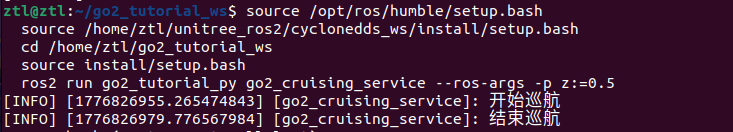
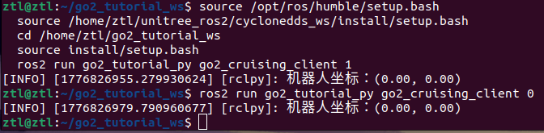

第 8 章 用 Service 控制巡航开关¶
上一章我们用 Topic 持续推送控制命令。这一章换一种通信形状:把"开始巡航 / 停止巡航"封装成一个 Service,让控制动作变成一次请求、一条响应——一问一答,事毕即止。
📨 本章通信方式:Service(服务)
形状:双向 · 一请求一响应 · 短事务
本章关键 API:self.create_service(Cruising, "cruising", self.cru_cb)
要记住的事:客户端说"帮我做这件事",服务端立刻处理并回一条结果,通信到此结束。Service 不适合持续控制数据流(那是 Topic 的活),更适合"切状态""触发一次动作""读一次结果"这种短事务。
和第 7 章的 Topic 对比看——Topic 是单向广播、不关心谁在听;Service 是双向握手、每次请求都一定有一条响应。下一章的 Action 又会换一种形状(长任务 + 反馈)。
本章你将学到¶
- 看懂
Cruising.srv这种最小 Service 接口是怎么描述“开关型命令”的 - 学会编写
go2_cruising_service和go2_cruising_client - 分清 Service 适合“短事务控制”，不适合持续高速数据流
背景与原理¶
Service 的核心气质是一问一答。
客户端发出一条请求，服务端收到后立即处理，然后回一条结果。整个过程像是在说:“帮我做这件事。”“好，我做完了，这是结果。”
这特别适合“切状态”“触发动作”“读一次结果”这种短事务。而像 /api/sport/request 这种需要持续刷新、不断发送的控制流，依然应该留在节点内部的定时器里完成。
go2_cruising_service 就是这个分层思路:
- 外部世界通过 Service 说“开始巡航”或“停止巡航”
- 节点内部继续每
0.1秒发布一次Request - 响应结果里顺手带回当前机器人的坐标
架构总览¶
flowchart LR
A[go2_cruising_client] ==>|"📨 请求 flag"| B["/cruising<br/>go2_tutorial_inter/srv/Cruising"]
B ==> C[go2_cruising_service]
C -.->|"📨 响应 point"| A
C -->|"(Topic)持续发布"| D["/api/sport/request<br/>unitree_api/msg/Request"]
E["/odom<br/>nav_msgs/msg/Odometry"] --> C
classDef service fill:#e8f5e9,stroke:#2e7d32,stroke-width:2px
class B service对照着第 7 章的 mermaid 看,本章增加的那条 -.-> 虚线箭头(响应 point 回到客户端)就是 Service 相对 Topic 多出来的"握手环节":客户端发请求必须拿到一条响应才算完。内部节点依然用 Topic 持续刷 /api/sport/request——这说明在同一个节点里,Topic 和 Service 完全可以并存,各负责不同的事。
这里最容易看错的是响应方向。
Cruising.srv 里真正返回给客户端的不是 success/message，而是一个 geometry_msgs/msg/Point。也就是说，服务端每次收到请求后，会把它当前记住的机器人位置回给客户端。
环境准备¶
本章继续复用两个已有包:
go2_tutorial_inter：只放接口定义go2_tutorial_py：放服务端和客户端节点
先看一下本章真正会用到的接口定义。Cruising.srv 在 src/tutorial/go2_tutorial_inter/srv/ 下，内容非常短:
这四行的含义很直接:
- 请求只有一个
flag flag == 0表示停止巡航flag != 0表示开始巡航- 响应里返回当前坐标
point
实现步骤¶
步骤一:先把接口定义认清楚¶
开始写代码前，我们先把接口语义说清楚，不然后面很容易拿旧版 Service 例子来套。
这一章的接口包名叫 go2_tutorial_inter，不是别的名字。Service 名字也叫 cruising，不是 /cruise_start。
如果你想在终端里直接检查接口，可以用这条命令:
# 查看 Cruising.srv 的生成结果
cd ~/unitree_go2_ws
source install/setup.bash
ros2 interface show go2_tutorial_inter/srv/Cruising
看到输出里是 int32 flag 和 geometry_msgs/Point point，说明接口这一层已经对上了。
步骤二:实现 go2_cruising_service¶
接下来这段服务端代码做四件事:
- 创建
cruising这个 Service Server - 订阅
/odom，把当前位置存在self.point里 - 用定时器持续往
/api/sport/request发送控制消息 - 在回调里根据
flag决定是MOVE还是STOPMOVE
把下面代码放进 src/tutorial/go2_tutorial_py/go2_tutorial_py/go2_cruising_service.py:
import json # 把速度参数打包成 JSON
import rclpy # ROS2 Python 客户端库
from geometry_msgs.msg import Point # Service 响应里返回的位置类型
from nav_msgs.msg import Odometry # 里程计消息，用来拿当前位置
from rclpy.node import Node # 自定义节点基类
from unitree_api.msg import Request # Go2 高层控制消息
from go2_tutorial_inter.srv import Cruising # 本章的自定义 Service
from .sport_model import ROBOT_SPORT_API_IDS # Go2 动作 id 常量表
class Go2CruisingService(Node):
def __init__(self):
super().__init__("go2_cruising_service")
self.service = self.create_service(Cruising, "cruising", self.cru_cb)
self.point = Point()
self.odom_sub = self.create_subscription(Odometry, "odom", self.odom_cb, 10)
self.declare_parameter("x", 0.0)
self.declare_parameter("y", 0.0)
self.declare_parameter("z", 0.5)
self.api_id = ROBOT_SPORT_API_IDS["BALANCESTAND"]
self.req_pub = self.create_publisher(Request, "/api/sport/request", 10)
self.timer = self.create_timer(0.1, self.on_timer)
def on_timer(self):
req = Request()
req.header.identity.api_id = self.api_id
params = {
"x": self.get_parameter("x").value,
"y": self.get_parameter("y").value,
"z": self.get_parameter("z").value,
}
req.parameter = json.dumps(params)
self.req_pub.publish(req)
def cru_cb(self, request: Cruising.Request, response: Cruising.Response):
flag = request.flag
if flag == 0:
self.get_logger().info("结束巡航")
self.api_id = ROBOT_SPORT_API_IDS["STOPMOVE"]
else:
self.get_logger().info("开始巡航")
self.api_id = ROBOT_SPORT_API_IDS["MOVE"]
response.point = self.point
return response
def odom_cb(self, odom: Odometry):
self.point = odom.pose.pose.position
这段代码的关键不在语法，而在分工。
Service 回调 cru_cb() 只负责"切状态"和"回结果"。真正持续发控制消息的，还是 on_timer() 这个定时器。所以你要把它理解成"Service 改内部状态，定时器负责持续执行"。
📨 本章 Service 通信的钥匙就是这一行
create_service 把节点注册成 Service 服务端。三个参数依次是:接口类型(Cruising.srv 生成)、服务名、处理请求的回调函数。
对比第 7 章的 create_publisher:那一行只是"我会往这个话题发东西";这一行是"我会收别人的请求、处理、并一定回一条响应"。一旦理解了这对调用的差异,Topic 与 Service 的分野就彻底清晰了。
步骤三:实现 go2_cruising_client¶
服务端有了之后，客户端就简单很多了。它只负责连上服务、发一个 flag，然后把响应里的坐标打出来。
把下面代码放进 src/tutorial/go2_tutorial_py/go2_tutorial_py/go2_cruising_client.py:
import sys # 读取命令行参数
import rclpy # ROS2 Python 客户端库
from rclpy.logging import get_logger # 用来打印日志
from rclpy.node import Node # 自定义节点基类
from rclpy.task import Future # 异步请求返回值类型
from go2_tutorial_inter.srv import Cruising # 本章的自定义 Service
class Go2CruisingClient(Node):
def __init__(self):
super().__init__("go2_cruising_client")
self.client = self.create_client(Cruising, "cruising")
def connect_server(self):
while not self.client.wait_for_service(1.0):
if not rclpy.ok():
get_logger("rclpy").error("连接被中断")
return False
self.get_logger().info("服务器连接中...")
return True
def send_request(self, flag) -> Future:
req = Cruising.Request()
req.flag = int(flag)
return self.client.call_async(req)
def main():
if len(sys.argv) != 2:
get_logger("rclpy").error("请提交一个整型数据！")
return
rclpy.init()
cru_client = Go2CruisingClient()
if not cru_client.connect_server():
return
future = cru_client.send_request(sys.argv[1])
rclpy.spin_until_future_complete(cru_client, future)
if future.done():
response: Cruising.Response = future.result()
get_logger("rclpy").info(
"机器人坐标：(%.2f, %.2f)" % (response.point.x, response.point.y)
)
rclpy.shutdown()
你会发现，这个客户端根本没有碰 /api/sport/request，也没有碰 /odom。这正是 Service 的职责边界:客户端只说“我要开始”或“我要停止”，具体执行细节全留给服务端。
步骤四:顺手理解三个参数 x/y/z¶
服务端节点里还声明了三个参数:
xyz
它们不是 Service 请求的一部分，而是服务端自己的运行参数。也就是说，如果你想改巡航速度，不是通过请求体改，而是在启动服务端时用 --ros-args -p ... 传进去。
这是个很典型的工程拆分:
- Service 请求 负责“开始还是停止”
- 节点参数 负责“开始之后按多大速度跑”
编译与运行¶
先编译接口包和教程包:
# 编译 Service 相关的两个包，并重新加载环境
cd ~/unitree_go2_ws
colcon build --packages-select go2_tutorial_inter go2_tutorial_py
source install/setup.bash
第一终端启动服务端:
# 启动巡航服务端:同时给一个前进速度和一个角速度
cd ~/unitree_go2_ws
source install/setup.bash
ros2 run go2_tutorial_py go2_cruising_service --ros-args -p x:=0.1 -p z:=0.5
想调不同的巡航轨迹?改 x / y / z 这三个参数就行
服务端节点里声明了三个运行参数,都是你可以自由修改的入口:
x前后线速度(m/s):决定机器人往前走多快y左右线速度(m/s):非零时会侧移z偏航角速度(rad/s):决定转向快慢
启动时用 --ros-args -p 名字:=值 覆盖默认值即可。三者都为 0 时机器人不动;只有 z 非零会原地转圈;x 和 z 同时非零才是弧线巡航。本章重点是 Service 通信机制,具体巡航轨迹你随意调,不影响理解。
第二终端启动客户端，让它发送开始巡航请求:
# 发送 flag=1，表示开始巡航
cd ~/unitree_go2_ws
source install/setup.bash
ros2 run go2_tutorial_py go2_cruising_client 1
如果你想停下机器人，再发一次 0:
# 发送 flag=0，表示停止巡航
cd ~/unitree_go2_ws
source install/setup.bash
ros2 run go2_tutorial_py go2_cruising_client 0
也可以不用客户端，直接在终端里调用 Service:
# 直接调用 /cruising Service
cd ~/unitree_go2_ws
source install/setup.bash
ros2 service call /cruising go2_tutorial_inter/srv/Cruising "{flag: 1}"
这里要特别注意，请求里只有 flag，没有别的字段。别把旧版 mode/success/message 之类的写法抄进来。
结果验证¶
这一章跑通后，你至少要确认四件事:
ros2 service list -t里能看到/cruising [go2_tutorial_inter/srv/Cruising]- 服务端收到
flag=1时，日志会打印“开始巡航” - 服务端收到
flag=0时，日志会打印“结束巡航” - 客户端输出里能看到服务端返回的当前位置
可以用下面几条命令交叉验证:
# 看服务是否已经上线
ros2 service list -t
# 看接口定义是不是对的
ros2 interface show go2_tutorial_inter/srv/Cruising
# 看控制消息有没有持续发到 Go2
ros2 topic echo /api/sport/request --once
结果演示¶
下面两张终端截图展示了 /cruising Service 被调用后的关键现象:服务端收到请求后开始执行巡航/转向逻辑,客户端能拿到响应结果。Service 和 Topic 的区别也在这里很直观:Topic 是持续发控制流,Service 是“一次请求,一次响应”。


常见问题¶
1. 客户端一直提示“服务器连接中...”¶
现象:客户端启动后一直在等服务上线。
原因:通常是服务端没启动，或者你编译后忘了 source install/setup.bash。
解决:
- 先检查
ros2 service list -t - 确认列表里是否出现
/cruising - 没有的话，回到服务端终端看是不是已经异常退出
2. Service 调通了，但机器人没动¶
现象:ros2 service call 有响应，客户端也收到了坐标，但 Go2 没动作。
原因:Service 只是改了 api_id，真正让机器人动的是后台定时器持续发 Request。如果服务端节点没正常运行，或者 /api/sport/request 链路没通，机器人就不会响应。
解决:
- 服务端终端保持常驻运行
- 用
ros2 topic echo /api/sport/request --once看消息是否真的发出 - 确认前面章节的 Go2 通信环境已经跑通
3. ros2 service call 报接口找不到¶
现象:系统提示找不到 go2_tutorial_inter/srv/Cruising。
原因:大概率是接口包没编译好，或者当前终端没有加载最新环境。
解决:
- 重新执行
colcon build --packages-select go2_tutorial_inter - 重新
source install/setup.bash - 再运行
ros2 interface show go2_tutorial_inter/srv/Cruising
4. 每次请求回来的坐标都是 (0.00, 0.00)¶
现象:服务能调通，但响应里的 point 一直像没更新。
原因:服务端拿位置的来源是 /odom。如果里程计链没起来，它当然只能回默认值。
解决:
- 先确认
/odom是否存在 - 用
ros2 topic echo /odom --once看有没有数据 - 没数据的话，先回第 6 章把
go2_driver_py跑起来
本章小结¶
这一章我们第一次把“持续控制”外面包了一层 Service。
真正持续发控制消息的还是服务端节点里的定时器；Service 只是负责收一个开关命令，再把内部状态切过去。这种分层很常见，你后面写更复杂的机器人应用时也会经常用到。
更重要的是，你现在应该已经能分清 Topic 和 Service 的边界了:连续数据流走 Topic，短事务控制走 Service。
下一步¶
Service 适合“一问一答”，但不适合执行一个可能持续十几秒的长任务。下一章我们把这个思路再往前推一步，用 Action 来封装“前进 X 米”这种需要反馈和结束结果的任务。